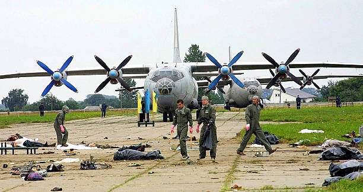

THE SKNYLIV AIR SHOW DISASTER
On July 27, 2002, over 10,000 spectators gathered at the Sknyliv airfield near Lviv, Ukraine, to celebrate the 60th anniversary of the Ukrainian Air Force's 14th Air Corps. The highlight of the event was a flight demonstration by the "Ukrainian Falcons," an elite aerobatic team. Two highly experienced pilots, Volodymyr Toponar and Yuriy Yegorov, were operating a Sukhoi Su-27UB fighter jet. At 12:52 PM, the aircraft entered a low-altitude rolling maneuver with a downward trajectory.

The Strategic Response: From Blame to User Interface (UI) Design The immediate strategy by the airline was Pilot Culpability, but investigators realized the flaw was systemic—a failure of the "Human-Machine Interface."
The Fatal Descent: As the jet attempted to pull out of the maneuver, its left wing clipped the ground. The massive fighter jet skidded across the tarmac, striking the nose of a stationary Ilyushin Il-76 transport plane before exploding and cartwheeling directly into the densely packed crowd of onlookers. Both pilots successfully initiated their ejection seats just seconds before impact and survived with minor injuries. However, the jet became a massive, tumbling ball of fire and shrapnel that cut through the spectators at high speed.
The Aftermath and Blame: The disaster remains the deadliest air show accident in world history. It claimed the lives of 77 people, including 28 children, and left 543 others injured—many with horrific burns and trauma. An official investigation concluded that the primary cause was "pilot error," specifically failing to follow the assigned flight plan and attempting maneuvers they had not sufficiently practiced for that specific airfield layout. The pilots countered that their flight maps were inaccurate and the flight area was too small for the maneuvers ordered. Both pilots were eventually sentenced to prison, and several high-ranking military officials were dismissed or demoted.
Key Facts
Date: July 27, 2002
Location: Sknyliv Airfield, Lviv, Ukraine
Casualties: 77 dead (28 children), 543 injured
Cause: Pilot error during a low-altitude aerobatic maneuver, exacerbated by poor organizational safety measures that allowed high-speed stunts to be performed too close to the spectator zone.
The Chuknagar Massacre is considered the largest single-day mass killing of the Bangladesh Genocide. Despite the staggering loss of life—estimated between 10,000 and 12,000 people—it remained a relatively "forgotten" chapter of history for many years compared to atrocities in larger cities like Dhaka. It serves as a stark testament to the systemic targeting of ethnic and religious minorities during the 1971 war. Today, the "Chuknagar Smrity Soudha" memorial stands at the site as a grim reminder of the human cost of the struggle for independence and the vulnerability of refugee populations during times of total war.